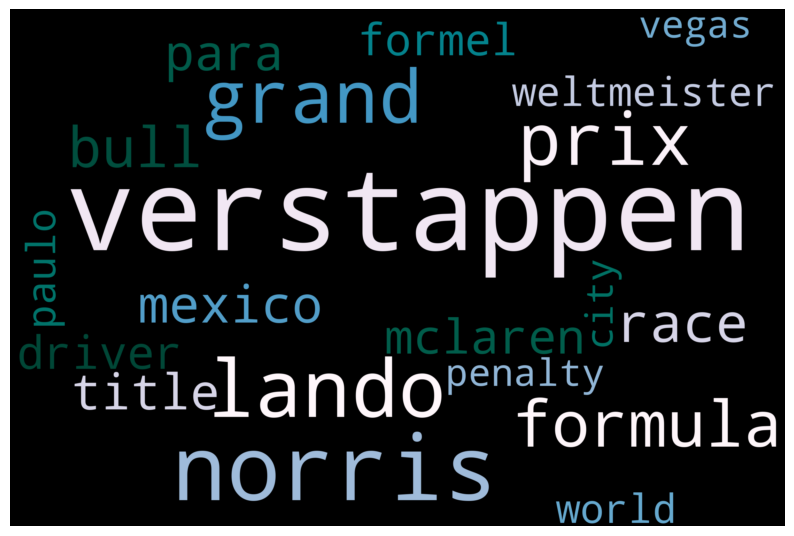
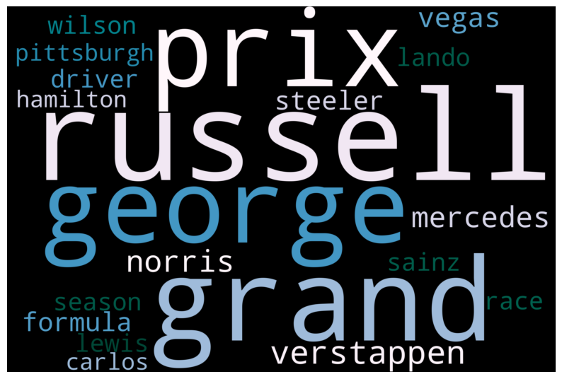
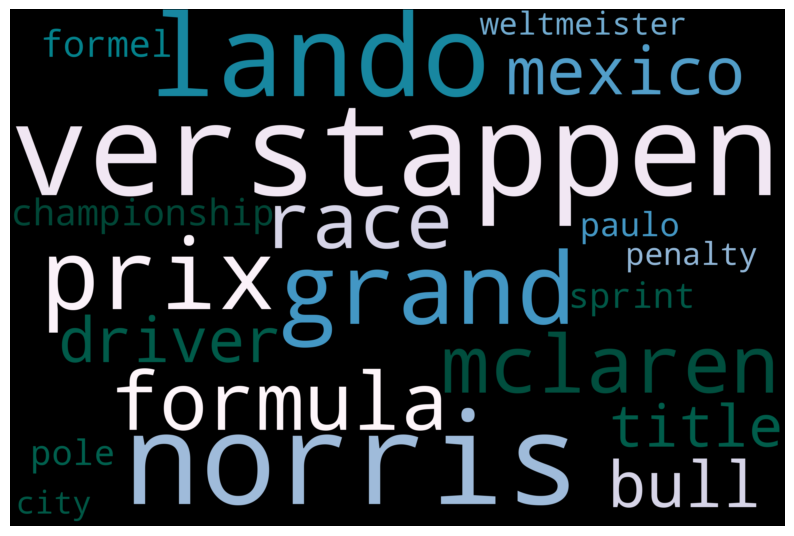
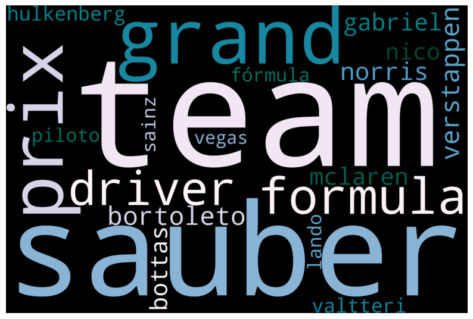
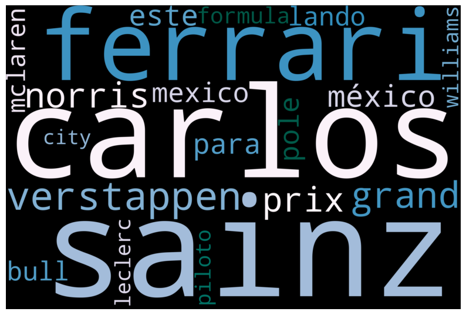
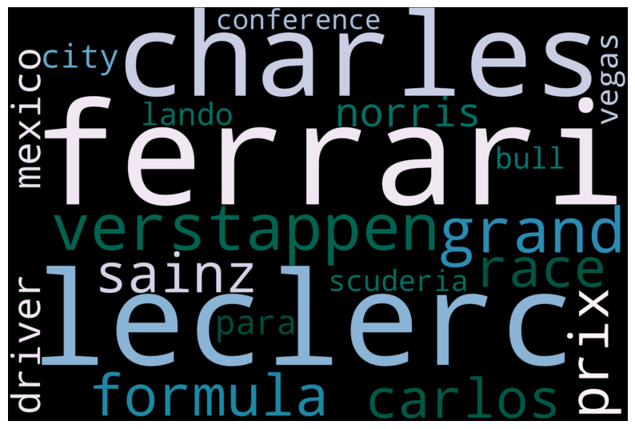
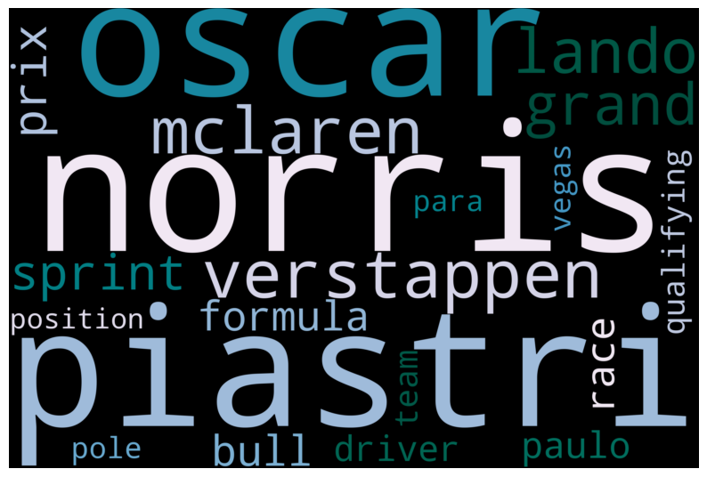
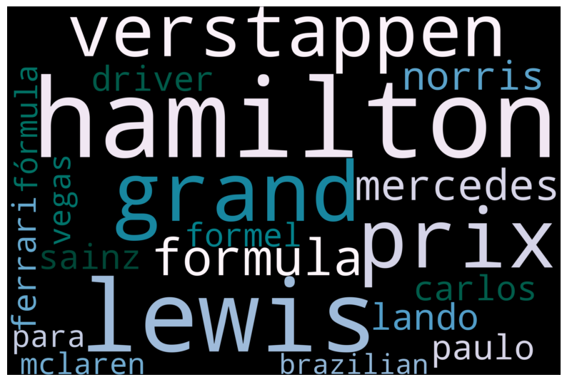
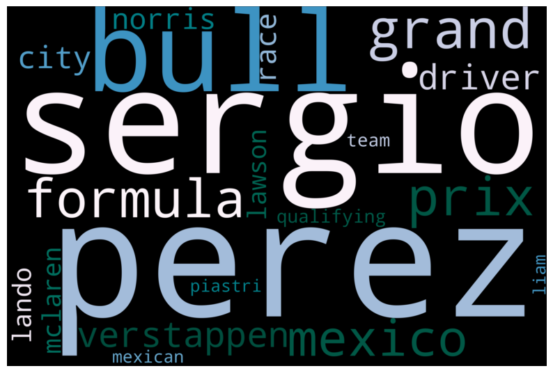
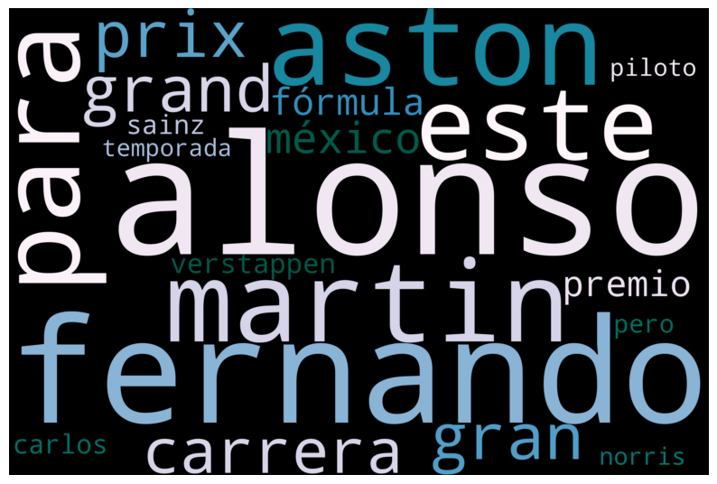

Code
# import required libraries
from wordcloud import WordCloud, STOPWORDS
import matplotlib.pyplot as plt
import json
import osNote: You should remove these instructions once you have read and understood them. They should not be included in your final submission.
Remember: Exactly what do you put on this page will be specific you your project and data. Some things might “make more sense” on one page rather than another, depending on your workflow. Organize your project in a logical way that makes the most sense to you.
Here’s one suggested structure for organizing your technical pages. You can adjust this as needed:
Audience:Remember that these are written for a technical audience. Assume they have completed the DSAN program, but would appreciate refreshers of the important concepts.
The following is a list of some of the things you should address on this page. This list is not exhaustive, and you should use your judgment to decide what is most relevant to your project.
The EDA (Exploratory Data Analysis) tab in your portfolio serves as a crucial foundation for your project. It provides a thorough overview of the dataset, highlights patterns, identifies potential issues, and prepares the data for further analysis. Follow these instructions to document your EDA effectively:
The goal of EDA is to gain a deeper understanding of the dataset and its relevance to your project’s objectives. It involves summarizing key data characteristics, identifying patterns, anomalies, and preparing for future analysis phases.
Here are suggestions for things to include on this page
Univariate Analysis:
Bivariate and Multivariate Analysis:
Data Distribution and Normalization:
Statistical Insights:
Data Visualization and Storytelling:
Conclusions and Next Steps:
Provide the source code used for this section of the project here.
If you’re using a package for code organization, you can import it at this point. However, make sure that the actual workflow steps—including data processing, analysis, and other key tasks—are conducted and clearly demonstrated on this page. The goal is to show the technical flow of your project, highlighting how the code is executed to achieve your results.
If relevant, link to additional documentation or external references that explain any complex components. This section should give readers a clear view of how the project is implemented from a technical perspective.
Remember, this page is a technical narrative, NOT just a notebook with a collection of code cells, include in-line Prose, to describe what is going on.
# Function to generate a word cloud for a single JSON file
def generate_wordcloud_top_n(file_path, output_folder, top_n=10):
def plot_cloud(wordcloud, output_file):
plt.figure(figsize=(10, 8))
plt.imshow(wordcloud, interpolation='bilinear')
plt.axis("off")
plt.savefig(output_file) # Save the plot
plt.show() # Display the plot
plt.close()
# Read the text from the JSON file
with open(file_path, 'r', encoding='utf-8') as file:
data = json.load(file)
# Concatenate all text content if it's a JSON dictionary
if isinstance(data, dict):
my_text = ' '.join(data.values())
# Generate word cloud to extract word frequencies
wordcloud = WordCloud(
width=3000,
height=2000,
random_state=1,
colormap="PuBuGn",
collocations=False,
stopwords=STOPWORDS
).generate(my_text)
# Extract word frequencies and get the top N words
word_frequencies = wordcloud.words_
top_words = dict(list(word_frequencies.items())[:top_n])
# Generate a new word cloud with only the top N words
top_wordcloud = WordCloud(
width=3000,
height=2000,
random_state=1,
colormap="PuBuGn",
collocations=False,
stopwords=STOPWORDS
).generate_from_frequencies(top_words)
# Save and display the word cloud
file_name = os.path.basename(file_path).replace('.json', '_wordcloud.png')
output_file = os.path.join(output_folder, file_name)
plot_cloud(top_wordcloud, output_file)
print(f"Word cloud saved to: {output_file}")
# Function to process all JSON files in a folder
def generate_wordclouds_for_folder(input_folder, output_folder, top_n=10):
os.makedirs(output_folder, exist_ok=True) # Ensure the output folder exists
for file_name in os.listdir(input_folder):
if file_name.endswith('.json'): # Process only JSON files
file_path = os.path.join(input_folder, file_name)
try:
generate_wordcloud_top_n(file_path, output_folder, top_n)
except Exception as e:
print(f"Error processing file {file_path}: {e}")
Word cloud saved to: ../../data/eda/WordClouds/Verstappen_clean_news_wordcloud.png
Word cloud saved to: ../../data/eda/WordClouds/Russell_clean_news_wordcloud.png
Word cloud saved to: ../../data/eda/WordClouds/Norris_clean_news_wordcloud.png
Word cloud saved to: ../../data/eda/WordClouds/Hulkenberg_clean_news_wordcloud.png
Word cloud saved to: ../../data/eda/WordClouds/Sainz_clean_news_wordcloud.png
Word cloud saved to: ../../data/eda/WordClouds/Leclerc_clean_news_wordcloud.png
Word cloud saved to: ../../data/eda/WordClouds/Piastri_clean_news_wordcloud.png
Word cloud saved to: ../../data/eda/WordClouds/Hamilton_clean_news_wordcloud.png
Word cloud saved to: ../../data/eda/WordClouds/Perez_clean_news_wordcloud.png
Word cloud saved to: ../../data/eda/WordClouds/Alonso_clean_news_wordcloud.png